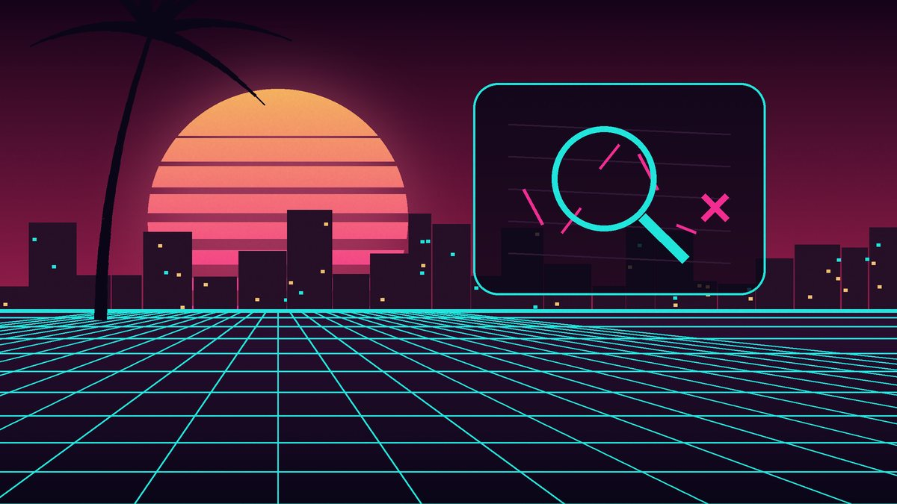

Un loro se chiva de 1.000 $ escondidos: el dinero oculto que ha encontrado un jugador
Un youtuber ha dado con dos formas curiosas de sacar dinero en GTA 6: escuchar a los loros de un sitio que se puede robar y bucear en barcos hundidos con un detector de metales.
Por Redacción Golpe Diario · Publicado el · Actualizado el

Qué ha pasado
El canal de YouTube JoblessGarrett ha publicado dos hallazgos de dinero para el principio de GTA 6. En el primero, durante el robo de un local, los loros repiten lo que dicen los de dentro y uno de ellos se chiva de que hay botín escondido: 1.000 $ dentro de un generador, junto a la rejilla de la pared. Según su vídeo, a él se le complicó el robo, llegó la policía y, cuando volvió, el dinero ya no estaba. Hay que sacarlo antes de que aparezcan.
Otros medios recogen un caso idéntico, con loro y generador, y no coinciden en la cifra. Beebom y Roonby lo sitúan en Exotic Animals Front, en Key Lento: se llega con el encargo de Shirley, que te pide comprar ron en una licorería, y desde allí se oyen ruidos en la trastienda. Hay que saltar la valla junto a la tienda, ocuparse de los criminales que vigilan el patio y hablar con el loro, que habla de dinero y señala el generador. En la rejilla hay unos 1.300 $; la caja fuerte de la trastienda guarda otros 900 $ y objetos de valor, y la caja registradora, unos 100 $. PlayDay cuenta un encuentro parecido en una licorería llamada Three Sheets, con cuatro enemigos fuera, uno con pistola, y cifra el botín en algo menos de 1.500 $.
En el segundo vídeo, el youtuber bucea en barcos hundidos con un detector de metales y saca cofres y objetos de oro, como una pipa de dragón, un candelabro o una cuchara ceremonial. Según él, lleva 3.200 $ en menos de 30 minutos. El buceo no está disponible desde el primer minuto: Games.gg y SlashGear explican que se abre al terminar Island Dreams, una misión del capítulo 1 con el buscador de tesoros Kenton Rees.
SlashGear cuenta seis naufragios en torno a Key Lento. En el de Nuestra Señora del Ocio solo hay 10 doblones de oro; en los demás hay entre cinco y siete objetos cada uno. No hace falta vaciar un barco de una vez, y el mapa muestra cuántos tesoros llevas recuperados en cada sitio. Lo que saques se vende a Kenton. Beebom cuenta 2.600 $ en su cacería, con las monedas de oro a unos 200 $ cada una, y avisa, igual que Roonby, de que puede aparecer un tiburón y de que bucear sin permiso de recuperación puede atraer a las autoridades.
Qué significa para ti
- Si robas un local con loros, escucha lo que dicen antes de irte: pueden delatar dinero extra.
- No te fíes de una cifra exacta para el generador: las fuentes hablan de 1.000 $, de unos 1.300 $ y de casi 1.500 $.
- Abre el escondite antes de que llegue la policía o lo perderás, según el youtuber.
- Para bucear, termina antes Island Dreams: el equipo y el detector los da Kenton, según Games.gg.
- Ingresa el dinero cuando lo tengas: Beebom recuerda que, si Jason muere o lo detienen, pierde lo que lleva encima.
Lo tienes también en la guía: Cómo ganar dinero en GTA 6
Contrastado con: JoblessGarrett (YouTube) · JoblessGarrett (YouTube) · Beebom · Roonby · PlayDay · SlashGear · Games.gg
Sigue leyendo
Las armas legendarias de GTA 6: más de 120 variantes doradas y cuatro para empezar a buscar
GTA 6 esconde más de 120 variantes doradas de armas ya conocidas, con mejores estadísticas que el modelo de serie. Esta es la guía de Insider Gaming para encontrar algunas de las más buscadas, estuche a estuche.
Los 19 talleres Pay 'n' Spray de Leonida: dónde están y para qué sirven
GTA 6 reparte 19 talleres Pay 'n' Spray por todo el mapa, repartidos de forma desigual entre los cinco condados. Aquí tienes dónde está cada uno y qué puedes hacer en ellos además de repintar el coche.
Dónde está la caja fuerte del refugio de moteros del capítulo final en GTA 6, y su código
El mayor escondite de la banda de moteros del capítulo final de GTA 6 guarda tres objetos de valor: una caja fuerte, un revólver especial y una moto única. Esta es la ubicación exacta de cada uno y el código para abrir la caja.